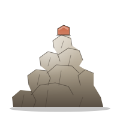

cairn.Comparison
Cairn is the newest entrant in the OSM-stack geocoder space. This page is the honest read on what we share with Pelias, Photon, and Nominatim — and where we make different tradeoffs. Numbers are from public docs and our own criterion benches; nothing here is marketing.
Geocoder originally built at Mapzen, now community-maintained. Multi-service Node.js stack on top of Elasticsearch. Strong on global coverage, breadth of importers (OSM, WhosOnFirst, OpenAddresses, Geonames, OpenStreetCam), and ranking quality. Production-ready but operationally heavy: a real Pelias deploy is roughly ten cooperating services plus an Elasticsearch cluster. MIT-licensed.
Single-JAR Java geocoder built on Elasticsearch by komoot. Smaller scope than Pelias — forward + autocomplete only, no structured queries, no reverse-on-OpenAddresses. Very fast on the autocomplete path because it's purpose-built for it. Apache-2.0. Still ships an Elasticsearch alongside the JAR.
Reference OpenStreetMap geocoder. PHP application backed by
PostgreSQL + PostGIS. The canonical answer for OSM-only
deployments and the engine behind nominatim.openstreetmap.org.
Best-in-class reverse geocoding, careful address normalization,
but forward search latency is bound by the database. GPL-2.0.
Single static Rust binary plus a flat-file bundle. tantivy for
text, custom rkyv tile blobs for places, R*-tree on bbox plus
geo::Contains for reverse. No daemon dependencies, no
cluster, no database. MIT or Apache-2.0. Alpha — not yet
production-tested at planet scale; country-scale bundles work today.
| Cairn | Pelias | Photon | Nominatim | |
|---|---|---|---|---|
| Language | Rust | Node.js + Java (ES) | Java | PHP + C + SQL |
| Storage | flat files: tantivy + rkyv + bincode | Elasticsearch | Elasticsearch | PostgreSQL + PostGIS |
| Runtime deps | none | ES cluster + ~10 services | ES cluster + JVM | PG + PHP-FPM + nginx |
| Single binary | yes (musl-statable) | no | JAR (needs JVM) | no |
| Airgap | bundle copy | full stack mirror | JAR + ES + index dir | full stack mirror |
| Diff updates | cairn-build diff/apply |
minutely OSM replication | periodic full rebuild | minutely OSM replication |
| Forward search | yes | yes | yes | yes |
| Autocomplete | yes (prefix-ngram) | yes | yes (specialty) | limited |
| Reverse geocode | yes (PIP + nearest fallback) | yes | yes | yes (best-in-class) |
| Structured queries | yes | yes | no | yes |
| libpostal parsing | optional FFI | yes (built-in service) | no | partial |
| Importers | OSM, WoF, OA, Geonames, Overture, GeoParquet, MS Buildings | OSM, WoF, OA, Geonames, ++ | OSM (via Nominatim DB) | OSM |
| Wikidata enrichment | yes (multilingual labels + P31 kind + cross-refs) | limited (label join only) | limited (label join only) | limited |
| Building footprints | yes (MS Buildings, ODbL) | no | no | no |
| Stable identifier | structured gid (<source>:<type>:<id>) + bundle-local place_id |
structured gid |
OSM id only | OSM id + place_id |
| Lookup-by-id endpoint | /v1/place?ids=… (gid or u64) |
/v1/place |
n/a | /lookup |
| License | MIT or Apache-2.0 | MIT | Apache-2.0 | GPL-2.0 |
| Maturity | alpha | production | production | production (reference) |
Numbers from cargo bench on an Apple M-series laptop
in release mode. Synthetic in-memory datasets, single-thread, no
network round-trip. They isolate the engine cost; real
end-to-end latency adds HTTP framing on top (~50–200 µs).
| Workload | Dataset | Time |
|---|---|---|
| Exact forward search | 5,000 places | 6.1 µs |
| Autocomplete (3-char prefix) | 5,000 places | 48.8 µs |
| Fuzzy search (1 typo) | 5,000 places | 54.8 µs |
| Point-in-polygon (PIP) | 1,024 admin polygons | 25 ns |
| Nearest-k (k = 10) | 4,096 points | 514 µs |
Same 506 MB Switzerland OSM PBF, same 6 408-query workload
(Geonames-derived city + postcode + composite queries), same
Apple Silicon host (36 GB RAM, OrbStack). Sequential
single-client p50/p95/p99 from curl --time-total;
peak RPS from ab -k keepalive sweep.
Reproducible — see benchmarks/ in the repo for
the harness.
| Engine | Build | Disk | Hot RSS | p50 | p95 | p99 | Peak RPS |
|---|---|---|---|---|---|---|---|
| Cairn | 24 s | 195 MB | 80 MB | 0.51 ms |
0.63 ms |
0.74 ms |
57 554 |
| Pelias | 3 m 46 s | 3.5 GB | 2.7 GB | 13.76 ms |
34.41 ms |
57.23 ms |
362 |
| Nominatim | 3 h 13 m | 9.2 GB | 2.4 GB | 9.51 ms |
15.15 ms |
23.00 ms |
1 109 |
| Photon | 2 m 1 s | 1.3 GB | 2.1 GB | 5.88 ms |
15.26 ms |
25.18 ms |
2 406 |
Cairn ships the workload 31–77× faster at p99, sustains 24–159× higher peak RPS, with 26–34× smaller hot RSS and 6.7–48× smaller disk than the incumbents. Build wall-clock is 5–483× faster on the same 506 MB PBF input.
Same harness, 8.6× the input (4.7 GB Geofabrik PBF, ~3 M
places). Nominatim DE not run — projected ~28 h on arm64
single-thread osm2pgsql.
| Engine | Build | Disk | Hot RSS | p50 | p95 | p99 | Peak RPS |
|---|---|---|---|---|---|---|---|
| Cairn | 8 m 7 s | 1.54 GB | 359 MB | 0.57 ms |
1.08 ms |
2.35 ms |
39 664 |
| Pelias | 37 m | 5.28 GB | 5.15 GB | 10.29 ms |
17.10 ms |
23.16 ms |
506 |
| Photon | 19 m 22 s | 9.10 GB | 2.13 GB | 9.69 ms |
43.91 ms |
92.94 ms |
1 919 |
| Nominatim | not run — ~28 h projected on arm64 single-thread osm2pgsql |
||||||
On 3 M places Cairn keeps a 10–40× p99 lead, 21–78× peak RPS, and 6–14× smaller hot RSS vs each incumbent. Build is 2.4–4.6× faster in wall-clock and produces a 3.4–5.9× smaller on-disk artifact.
1 153 deliberate typo / ASCII-fold variants, top-1 hit rate.
Cairn's ?phonetic=true (DoubleMetaphone)
single-handedly recovers nearly every typo. No incumbent
ships a phonetic toggle today.
| Variant | Hits | Recall |
|---|---|---|
| baseline | 257 / 1 153 | 22.3 % |
?fuzzy=1 | 865 / 1 153 | 75.0 % |
?phonetic=true | 1 147 / 1 153 | 99.5 % |
?semantic=true | 257 / 1 153 | 22.3 % |
| all flags on | 1 153 / 1 153 | 100.0 % |
Numbers shift on different disks / kernels / host load.
Re-run with ./run.sh <engine> from the
benchmarks/ directory to validate on your own
hardware. The full report including per-engine setup
gotchas is at
benchmarks/results/REPORT.md.
scp a tarball and a binary, not stand up a cluster.Trivy scans the production container image on every push, every PR, and once a day at 06:17 UTC. The latest CRITICAL/HIGH/MEDIUM findings (mirrored from the GitHub Code Scanning tab):
| CVE | Severity | Package | Installed | Fixed in | Title |
|---|---|---|---|---|---|
| Loading… | |||||
Triage policy and reporting: SECURITY.md.